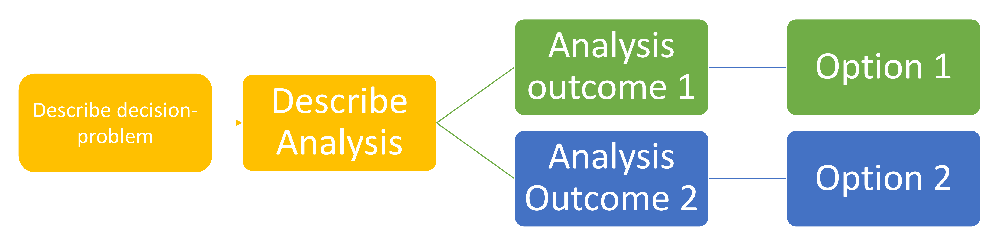
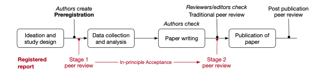
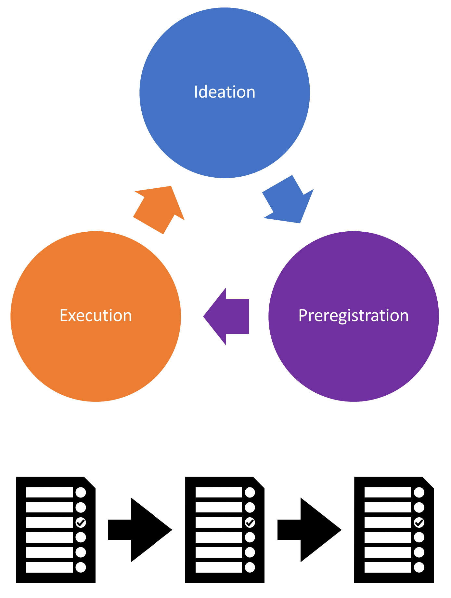
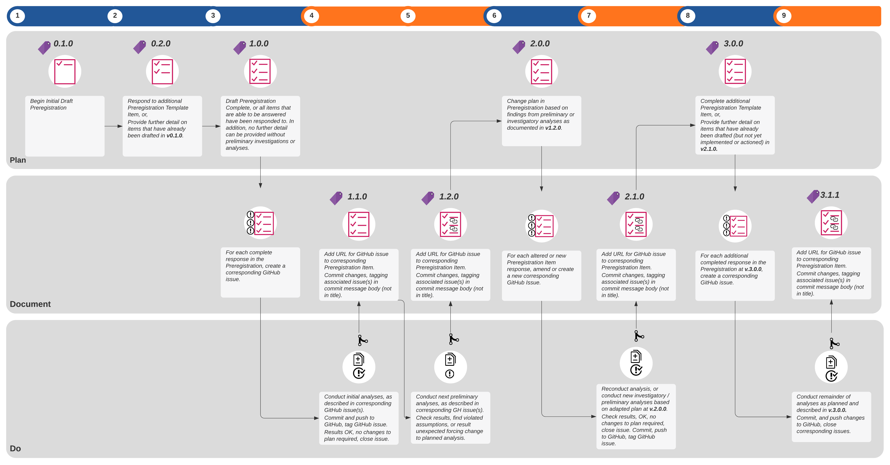

A primer on Adaptive Preregistration
Background & Motivation

The iterative nature of model development is a significant barrier to adopting preregistration for model-based research. Translating the preregistration process to a modelling research context is challenging because the iterative nature of model development conflicts with the inner logic of existing preregistration templates that presume a linear research workflow. The process of preregistration as it is currently implemented is tailored towards the hypothetico-deductive model of the scientific method. As such, the process of preregistration is completely distinct from, and precedes the implementation of the analysis plan laid out in the preregistration – analytic decisions are completely independent from the data.
In fact, preregistration has been defined as “the action of confirming an unalterable version of one’s research plan prior to collecting data” (Pu et al. 2019) or prior to analysing the data (Mertens and Krypotos 2019). In this process, researcher sequentially shifts from ideation, to study/analysis design and preregistration, to collecting and analysing the data, writing the report or manuscript, to documenting the research and publishing (Figure 1). The iterative nature of model development, however, inherently precludes this model of preregistration from being applied to model-based research in ecology and conservation.
Iterative Cycle of Model Development and Preregistration
Current preregistration practices based on NHST-focussed accounts of questionable research parctices prescribe the principle of ‘decision-independence’, where analysis decisions are made independently of and a priori to analysing the data (Srivastava 2018; Gelman and Loken 2013). However, the modelling process may genuinely violate the principle of ‘decision-independence’ because it is non-linear, iterative and usually generates many interim versions of the model preceding publication. During modelling a researcher will almost always engage in state-dependent decision-making — that is, decisions about whether to alter the model in a subsequent round of model development depend on the results of model testing, evaluation and analysis at the end of the previous iteration of model development. These practices aren’t necessarily questionable in and of themselves, but do have the potential to become questionable if they are exploited in service of artificially inflating the accuracy or precision of the model, its predictions or evaluation tests to the effect that the model is perceived to be more credible than it would be if that practice did not occur – essentially data-dependent decisions that lead to consumers of the model placing unsubstantiated belief in the reliability, validity and utility of the model and its outputs are questionable (Gould et al., n.d.) and can be mitigated through the practice of preregistration.
Very often in modelling, there are decisions that are necessarily dependent on the outcome of previous analytic decisions in the modelling workflow (Liu, Althoff, and Heer 2020). Firstly, preliminary or investigatory analyses might need to be conducted before being able to specify future decision-steps in the analysis plan. For example, modellers might need to check the distribution of particular variables in order to determine how to specify the model, perform assumption checks, or check for collinearity or spatial autocorrelation. Secondly, data-dependent decisions from model checking may justifiably result in changes to either the analysis or to interpretations of the mode (Srivastava 2018). For instance, inspection of the residuals and other model checking tests may force the modeller to return to earlier decision-points and change the planned analysis or model. Other times, the planned analysis and specified model may simply not converge, or the model is saturated and runs out of variation to apportion such that the model and or the model fitting algorithm must be respecified and re-implemented. Other times, the modelling process itself may generate knowledge and learning about the system, and the model structure changes throughout the process of model development.
Finally, sometimes there are some decisions that are too difficult to anticipate, or simply cannot be made in advance (Srivastava 2018). This is particularly true for decisions occurring at the later phases of the modelling construction and development process (Figure 2, TBC), where downstream decisions depend on the outcomes of earlier decisions and outcomes of modelling analyses. Some decisions might not be able to be specified on the first attempt at writing the preregistration until the model is fully or at least close to fully specified, for example, specifying precisely what and how sensitivity analyses or uncertainty analyses will be conducted.
As illustrated above, the adaptive nature of analysis during the model development process contravenes the central principle of preregistration – decision-independence and is fundamentally incompatible with the sequential, linear process of traditional preregistration where the analysis plan is fully specified prior to observing and analysing the data.
Adaptive Preregistration
In order to address the disjuncture between the iterative nature of model development, and the single-use, deterministic preregistration template format, we take an ‘expanded view of preregistration’, that fits with the concept of ‘adaptive preregistration’ proposed by Srivastava (2018). The modeller proceeds through the model development process, they will switch they will shift from ideation, preregistration, execution of the analysis and back to ideation and preregistration again, implementing implementing parts of the analysis plan that were specified in the previous preregistration step, and letting the outcomes in that analysis step inform the specification of the next analysis ( Figure 4).
This view of preregistration breaks with the current model of preregistration, wherein the author writes a single deterministic preregistration containing a rule for every decision, and sequentially shifts from ideation, preregistration to execution of the plan. Two features define adaptive preregistration:
- It contains ‘plans to deploy flexible strategies’ (Srivastava 2018) wherein the author can supply heuristic consisting of multiple different analysis or modelling strategies whose execution depends on the outcome of previous decision-points or analyses, for example, decision-trees could be preregistered prior to analysing the data (Baldwin et al. 2022).
- The preregistration may be iterative and consist of interim preregistrations that mark phases of modelling and analysis as different parts of the data are observed (Srivastava 2018).
Preregistering Flexibility
When preliminary analyses, model checking or other data-dependent decisions need to be made, the modeller can specify a ‘flexible strategy’ within their preregistration by:
- stating what quantity or outcome needs to be known to move forward with the modelling and analysis,
- explaining what test or analysis will be performed to obtain this quantity or outcome, and what parts of the data will be used in this analysis, and
- describing how the results will be interpreted, listing each potential decision and its trigger, where possible.
Interim Preregistrations
The modeller follows an iterative process of preregistration. As they proceed through the model development process, they can shift from ideation, preregistration and execution of the analysis plan, to preregistration again. Depending on observed outcomes of the pre-specified decision-trees or registered flexible heuristics, interim preregistrations are created at multiple points in the model development process, each time there is an addition or amendment to the analysis plan.

Documenting adaptive preregistration transparently
The Checking Problem
Following publication of the final study, authors, reviewers, editors and readers may all engage in the process of checking a manuscript or published paper against its preregistration to verify that the study and analyses were conducted as specified in the preregistration. The process of preregistration is already cumbersome, because the dominant format of the preregistration is a single, static text-based document designed with the study authors in mind to very quickly insert the required analysis plan information, rather than to facilitate a comparison of the reported analysis and results against the planned analysis in the preregistration. In their current form, they are almost exclusively exist as “write-only media” (Pu et al. 2019). The task of model checking is further complicated by the non-linear and iterative nature of model development, and by our proposed adaptive preregistration methodology, because in most modelling studies there will likely be interim preregistrations, such that there are multiple versions of the preregistration to check against the completed analysis.
Implementing Adaptive Preregistration with git and GitHub
Given the iterative nature of adaptive preregistration then, the current convention of the single-use, deterministic and static text-based document format for preregistration is inadequate. Interim versions of a preregistration must be time-stamped and ideally version-controlled, such that it is clear not just that two or more versions differ from each other, and in what order they were created, but so that it is explicitly clear in how and why they differ. To facilitate preregistration checking of flexible modelling and analysis strategies, we must link the results of both final and preliminary analyses back to the specified strategy: the link between a particular triggered analysis decision, and the analysis outcome that triggered the decision must be explicit. Additionally, if the results of some preliminary analyses cause revisions to the model itself or a different modelling procedure or approach to be selected than was originally or previously planned, then the trigger for this decision must be explicitly linked to the next version of the preregistration.
We propose leveraging the features of git and GitHub to facilitate implementation both adaptive preregistration in a transparently documented manner (Figure 4), and provide a step-by-step guide.

References
Baldwin, J. R., J. B. Pingault, T. Schoeler, H. M. Sallis, and M. R. Munafò. 2022. “Protecting Against Researcher Bias in Secondary Data Analysis: Challenges and Potential Solutions.” Eur J Epidemiol 37 (1): 1–10. https://doi.org/10.1007/s10654-021-00839-0.
Gelman, Andrew, and Eric Loken. 2013. “The Garden of Forking Paths: Why Multiple Comparisons Can Be a Problem, Even When There Is No “Fishing Expedition” or “p-Hacking” and the Research Hypothesis Was Posited Ahead of Time.” Department of Statistics, Columbia University.
Gould, Elliot, Fraser, Hannah, Rumpff, Libby, and Fidler, Fiona. n.d. “A Roadmap of Questionable Research Practices in Ecological Modelling.”
Liu, Yang, Tim Althoff, and Jeffrey Heer. 2020. “Proceedings of the 2020 CHI Conference on Human Factors in Computing Systems.” In. ACM. https://doi.org/10.1145/3313831.3376533.
Mertens, G, and AM Krypotos. 2019. “Preregistration of Analyses of Preexisting Data.” Psychol Belg 59 (1): 338–52.
Pu, Xiaoying, Licheng Zhu, Matthew Kay, and Frederick Conrad. 2019. “Designing for Preregistration in Practice: Multiple Norms and Purposes.”
Srivastava, Sanjay. 2018. “Sound Inference in Complicated Research: A Multi-Strategy Approach.”